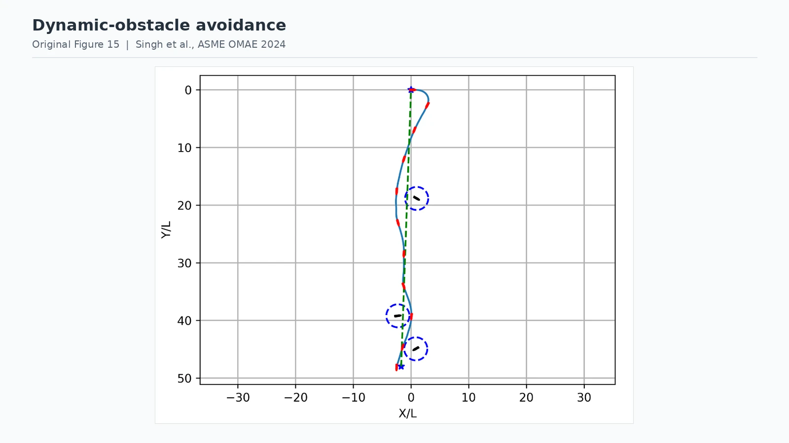

The problem
Proximity alone is not a sufficient measure of danger at sea. A distant vessel approaching quickly may demand attention before a nearby vessel moving away. A navigation policy needs to distinguish credible threats early while continuing toward its destination.
Approach
I formulated the decision problem with a Deep Q-Network that selected discrete navigation actions. The state and objective combined path-tracking information with collision risk and velocity-potential fields, giving the policy information about both vessel separation and relative motion.
Balancing progress and safety
The policy balanced following the intended route with avoiding collisions in increasingly crowded environments. Velocity potential allowed the risk assessment to anticipate developing encounters rather than reacting only when another vessel was already close.
Outcome
Velocity-aware collision-risk assessment improved avoidance by enabling earlier identification of credible threats and more proactive maneuvers. The work contributed to “Deep Reinforcement Learning for Ship Collision Avoidance and Path Tracking,” published at ASME OMAE 2024.
